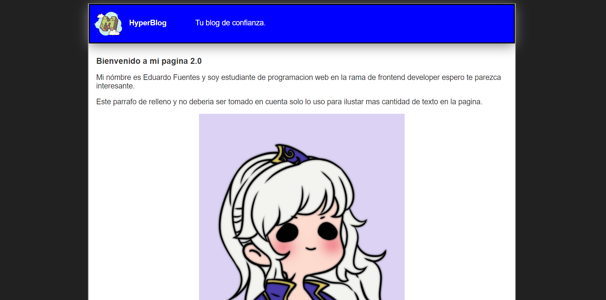
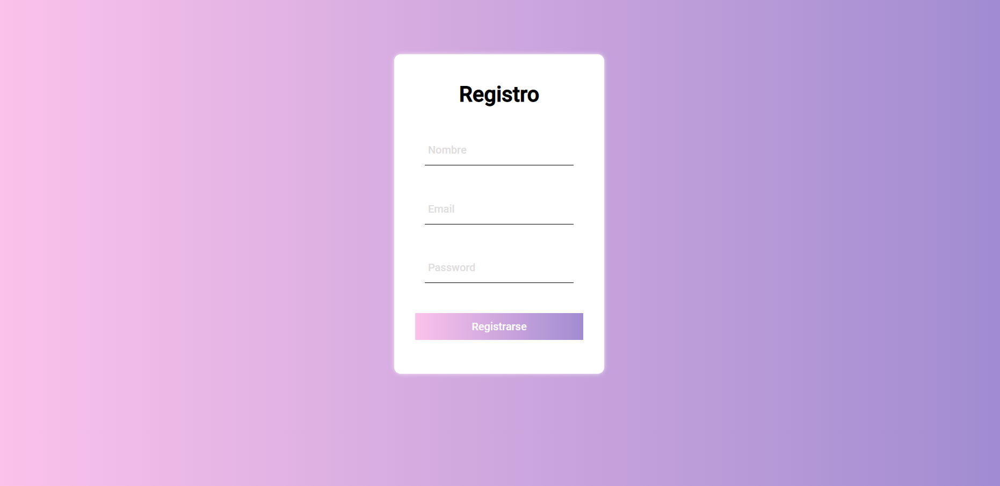

¿Quien soy?

Mi nombre es Eduardo Fuentes nací el 16 de marzo de 1997, actualmente vivo en la ciudad de Yopal-Casanare (Colombia), soy un apasionado de la informática y me encanta todo lo relacionado con esta, por lo que decidí aventurarme en el campo de la programación y más aún en el front end.
Estudios

Como ya te conté soy front end developer junior, me intereso mucho el tema de aprender JavaScript y crear páginas web por lo que lo elegí como mi principal lenguaje de programación además de Html y Css.


Proyectos

Para una muestra de lo que he ido creando estos son mis proyectos montados en GitHub que he hecho a lo largo de mi ruta de aprendizaje y proyectos que crearé en un futuro.
Este proyecto consta de un formulario de inicio y registro, del cual solo funciona por el momento el apartado de inicio de sesión con usuario: eduardo y contraseña: 246810 ya establecido en un par de variables, puedes verlo haciendo clic aquí
Este proyecto consta de un blog de prueba en mi etapa de aprendizaje para aprender sobre el funcionamiento de git y GitHub es un trabajo muy básico, pero le tengo bastante cariño pues es el primero blog que hice, puedes verlo haciendo clic aquí
Este proyecto consta de un formulario de solo registro de usuario con muy bonitas animaciones las cuales puedes ver haciendo clic aquí